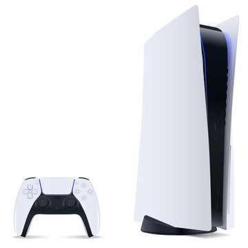
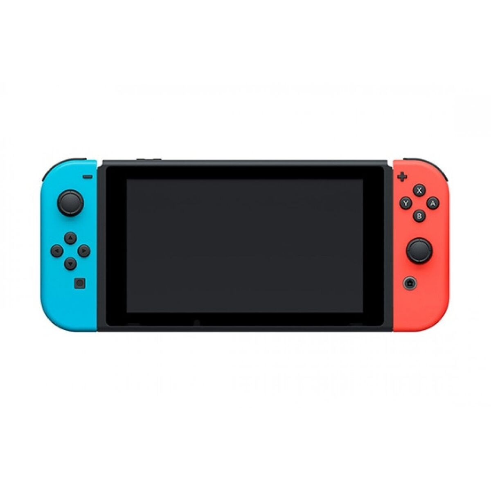
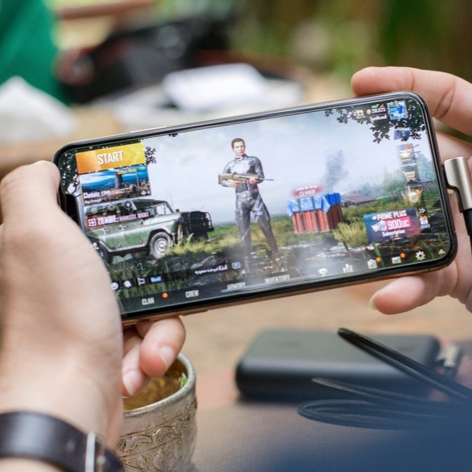

Playstation 5
Playstation 5 on uusin Sonyn kehittämä pelikonsoli. Se vie pelaamisen aivan uudelle tasolle korkealaatuisten grafiikoiden ja suorituskyvyn kautta. Laajan ja laadukkaan pelivalikoiman, sekä
mahtavan pelikokemuksen kautta, Playstationit ovat minun lempi pelikonsoleitani. Olen itse ekan kerran pelannut Playstation 2- konsolilla, ja siitä eteenpäin jokaisella
uudemmalla. PS5 on selkeästi kehittyneempi verrattuna aiempiin, sillä se tuo aivan uuden ulottuvuuden pelaamiseen. Uusi DualSense- ohjain antaa pelatessa uutta tuntua pelaamiseen,
sillä se antaa haptista palautetta ja mukaautuvan liipaisimen, joten pelatessa pelin tapahtumat tuntee käsissään ihan uudella tavalla.

Nintendo Switch
Nintendon uusin pelikonsoli, joka on huippuluokkaa verrattuna aikaisempiin Nintendoihin! Switch on hyvin kätevä konsoli. Kuvassa olevaa versiota voi käyttää
käsikonsolina, tai vaihtoehtoisesti liittää televisioon tai näyttöön ja nauttia peleistä suuremmalla ruudulla. Switchin ohjaimet, Joy-Conit, ovat irroitettavissa
ja tämä mahdollistaa monipuolisen pelaamisen yksin tai ystävien kanssa. Tämä konsoli on mahtava, sillä sen voi ottaa vaikkapa matkoille
mukaan kätevän kokonsa ansiosta. Voin ehdottomasti suositella tätä pelikonsolia kaiken tasoisille pelaajille.

Puhelin
Älypuhelin löytyy lähes jokaisen taskusta. Monet suositut konsolipelit ovat myös saaneet mobiiliversion, joten voit pelata lempi konsolipelejäkin mahdollisesti älypuhelimellasi.
Lisäksi on olemassa monia pelejä, jotka ovat vain puhelimille saatavilla, esimerkiksi suomalaisen Supercellin kehittämät pelit, kuten Hay Day, Clash of Clans ja Clash Royale.
Nämä pelit ovat hienosti tehtyjä maailmankuuluisia puhelinpelejä, jotka ovat usein puhelinpelien top-listoissa. Parasta on se, että useita puhelinpelejä pystyy pelata
täysin ilmaiseksi! Puhelin on myös kompaktin kokoinen ja aina mukana matkassa, joten tylsän paikan tullen esimerkiksi lentokoneessa tai bussissa on mukavaa avata
jokin puhelinpeli ja kuluttaa aikaa sen parissa.
